<!DOCTYPE html PUBLIC "-//W3C//DTD XHTML 1.0 Transitional//EN" "http://www.w3.org/TR/xhtml1/DTD/xhtml1-transitional.dtd">
<html xmlns="http://www.w3.org/1999/xhtml">

<!-- Mirrored from delhi-timeline.in/ by HTTrack Website Copier/3.x [XR&CO'2014], Thu, 09 Jul 2015 04:38:08 GMT -->
<head>
<meta http-equiv="Content-Type" content="text/html; charset=UTF-8" />
<title>Delhi Timeline | by Tapan Babbar - A dive into the history of Delhi</title>
<link rel="shortcut icon" type="image/x-icon" href="images/favicon_india.ico" />
<link rel="stylesheet" href="css/jpreloader.css" />
<link href="css/style.css" rel="stylesheet">
<link rel="stylesheet" type="text/css" href="css/gallery.css" />
<link rel="stylesheet" type="text/css" href="css/elastislide.css" />
<meta name="viewport" content="width=device-width, user-scalable=no">


<meta name="description" content="The rich lands of Delhi have lured men for centuries. A dive into history tells us that on these banks of river Yamuna, many came to plunder, while others, with ambitions to rule Hindustan made Delhi as their capital" />

<!-- Schema.org markup for Google+ -->
<meta itemprop="name" content="Experience the History of Delhi on a time travel that takes you across 14 centuries.">
<meta itemprop="description" content="The rich lands of Delhi have lured men for centuries. A dive into history tells us that on these banks of river Yamuna, many came to plunder, while others, with ambitions to rule Hindustan made Delhi as their capital">
<meta itemprop="image" content="../www.delhi-timeline.in/images/meta/meta_main.html">

<!-- Open Graph data -->
<meta property="og:title" content="Experience the History of Delhi on a time travel that takes you across 14 centuries."/>
<meta property="og:image" content="../www.delhi-timeline.in/images/meta/meta_main.html"/>
<meta property="og:site_name" content="Delhi Timeline| by Tapan Babbar - A dive into the history of Delhi"/>
<meta property="og:description" content="The rich lands of Delhi have lured men for centuries. A dive into history tells us that on these banks of river Yamuna, many came to plunder, while others, with ambitions to rule Hindustan made Delhi as their capital"/>
<meta property="og:url" content="index.html" />


<!-- Twitter Card data -->
<meta name="twitter:card" content="summary">
<meta name="twitter:site" content="@tapanbabbar">
<meta name="twitter:title" content="Experience the History of Delhi on a time travel that takes you across 14 centuries.">
<meta name="twitter:description" content="The rich lands of Delhi have lured men for centuries. A dive into history tells us that on these banks of river Yamuna, many came to plunder, while others, with ambitions to rule Hindustan made Delhi as their capital">
<meta name="twitter:creator" content="@tapanbabbar">

<meta name="twitter:image" content="../www.delhi-timeline.in/images/meta/meta_main.html">


<noscript>
<style>
.es-carousel ul {
	display: block;
}
</style>
</noscript>
<script id="img-wrapper-tmpl" type="text/x-jquery-tmpl">
			<div class="rg-image-wrapper">
				{{if itemsCount > 1}}
				<div class="slide_controls">
        <div class="slide_btn slide_play"></div>

        <div class="slide_next slide_btn rg-image-nav-next"></div>
        <div class="slide_prev slide_btn rg-image-nav-prev"></div>
      </div>


				{{/if}}
				<div style="position:relative">
				<div class="rg-image"></div>
				<div class="rg-loading"></div>
				</div>
				<div class="rg-caption-wrapper">
					<div class="rg-caption" style="display:none;">
						<h1></h1>
						<p></p>
						<div class="image_license"><a href="http://creativecommons.org/licenses/by/2.0/deed.en" target="_blank">Some rights reserved <span class="image_author_name"> </span>
						</a>
					</div>
					</div>

				</div>
			</div>
		</script>
<link href='../fonts.googleapis.com/css55d0.css?family=Montserrat' rel='stylesheet' type='text/css'>
<link href="../fonts.googleapis.com/css4b44.css?family=PT+Sans:400,700,400italic,700italic" media="screen" rel="stylesheet" type="text/css" />
<script src="../code.jquery.com/jquery-latest.min.js"></script>
<script src="js/jpreLoader.min.js"></script>
<script type="text/javascript" src="js/script.js"></script>
<script type="text/javascript" src="js/jquery.ba-viewportoffset.js"></script>
<script src="js/timeline.js"></script>

<script type="text/javascript" src="js/jquery.tmpl.min.js"></script>
<script type="text/javascript" src="js/jquery.easing.1.3.js"></script>
<script type="text/javascript" src="js/jquery.elastislide.js"></script>
<script type="text/javascript" src="js/gallery.js"></script>
<script type="text/javascript" src="js/stellar.js"></script>
<script type='text/javascript' src='js/jquery.scrollTo-min.js'></script>


<!--[if IE lt 11]>
<script>
$(document).ready(function() {

$(".timeline").css({"z-index":1500});
$(".header_banner").css({"z-index":1100});
$("footer").css({"z-index":1500});
$(".section-contact").css({"z-index":699 , "background-attachment": "inherit"});
$(".header-12").css({"z-index":700});
$(".lightbox_content .container").css({"padding-bottom":80});
$(".plus_photo").hide();

});

</script>
<![endif]-->


<!-- HTML5 shim, for IE6-8 support of HTML5 elements. All other JS at the end of file. -->
<!--[if lt IE 9]>
      <script src="js/html5shiv.js"></script>
    <![endif]-->
<style>
.pointer_info .pointer_extra
{
	color: #7d756d;
text-transform: lowercase;
margin-top: 10px;
}
.section-contact
{
	height:auto;
	max-height:none;
}
.more_xp {
width: 100%;
margin-top: 880px;
margin-bottom: 200px;
}
.xp_text {
text-align: center;
width: 100%;
color: #313131;
font-size: 22px;
position: relative;
}
.xp_border {
width: 270px;
position: absolute;
height: 44px;
top: -8px;
background: rgba(255,255,255,0.5);
left: 50%;
margin-left: -135px;
}
.xp_text span {
position: relative;
}
.project_thumb {
width: 100%;
max-width: 410px;
margin: 30px auto 30px auto;
background: white;
border: 1px solid black;
cursor: pointer;
}
.project_thumb_image {
width: -moz-calc(100% - 10px);
width: -webkit-calc(100% - 10px);
width: -o-calc(100% - 10px);
width: calc(100% - 10px);
margin: 5px;
opacity: 1;
background: black;
}
.project_thumb_image img
{
	width:100%;
	-webkit-transition: all 0.3s ease;
-moz-transition: all 0.3s ease;
-o-transition: all 0.3s ease;
-ms-transition: all 0.3s ease;
transition: all 0.3s ease;
}
.project_thumb:hover img
{
	opacity:0.6;
}
.project_thumb_text {
font-size: 20px;
color: #313131;
padding: 0 10px 10px 10px;
}
.project_thumb_text .tags {
display: inline;
color: #5c5c5c;
font-size: 13px;
}
.contact_info ul li
{
	width:33.33%;
}
@media screen and (max-width: 450px)
{.project_thumb {
	width:90%;
	margin-left:5%;
}
}
</style>
<script>

$(document).ready(function(e) {
    $(".more_xp").css({"margin-top": parseInt($(".contact_container").offset().top)- parseInt($(".section-contact").offset().top) +  parseInt($(".contact_container").height()) + 100});

	$(".project_thumb").click(function(){

	  window.open('http://www.75yearsofbatman.com/','_blank');

		});
});


</script>


</head><body>
<div id=jSplash >
    <div class="image_preload"></div>
    <div class="jSplash_container">
        <div class="splash_text"></div>
        <div class="splash_bw"></div>
        <div class="splash_color"></div>
    </div>
</div>
<section class="landing delhi_section">
<a href="http://onepagelove.com/delhi-timeline" target="_blank"><div class="opl_photo" style=" position:absolute; left:0px ; top:70px""></div></a>
    <div class="logo"></div>
    <div class="author">
        <div class="author_line"></div>
        <h1 class="author_name">by Tapan Babbar</h1>
        <div class="author_line"></div>
    </div>
    <div class="dive_history">
        <p>DIVE IN THE HISTORY</p>
    </div>
    <div class="landing_arrow"></div>
</section>
<nav class="navigation">
    <h1 class="logo_main"><span class="logo_name">Delhi Timeline</span> <span class="logo_auth_name">|  by Tapan Babbar </span></h1>
    <div class="share">
        <div class="share_text"><span class="share_icon"></span>share</div>
        <div class="share_box">
            <div class="share_kink"></div>
                     <ul>
                <a href="https://www.facebook.com/login.php?next=https%3A%2F%2Fwww.facebook.com%2Fsharer%2Fsharer.php%3Fs%3D100%26p%255Btitle%255D%3DDelhi-Timeline%26p%255Burl%255D%3Dhttp%253A%252F%252Fdelhi-timeline.in%26p%255Bsummary%255D%3DThe%2Brich%2Blands%2Bof%2BDelhi%2Bhave%2Blured%2Bmen%2Bfor%2Bcenturies.%2BOn%2Bthese%2Bbanks%2Bof%2Briver%2BYamuna%252C%2Bmany%2Bcame%2Bto%2Bplunder%252C%2Bwhile%2Bothers%252C%2Bwith%2Bambitions%2Bto%2Brule%2BHindustan%2Bmade%2Bit%2Btheir%2Bcapital%26p%255Bimages%255D%255B0%255D%3Dhttp%253A%252F%252Fdelhi-timeline.in%252Fimages%252Fmeta%252Fmeta_main.jpg%26ret%3Dlogin&amp;display=popup" target="_blank">  <li>
                   <div class="social_cont facebook" ></div>
                </li></a>
                 <a href="https://twitter.com/intent/tweet?url=http://delhi-timeline.in" target="_blank"> <li>
                  <div class="social_cont twitter"></div>
                </li></a>
               <a href="https://plus.google.com/share?url=www.delhi-timeline.in" target="_blank"> <li>
                    <div class="social_cont gplus"></div>
                </li></a>
                <a href="mailto:your_friend@gmail.com?Subject=Check%20Out%20Delhi%20Timeline&body=hey!%20Check%20out%20Delhi%20Timeline%20@%20http%3A%2F%2Fwww.delhi-timeline.in" target="_top">  <li>
                  <div class="social_cont mail"></div>
                </li></a>
            </ul>
            <div class="part"></div>
            <div class="share_msg">Click to share </div>
        </div>
    </div>
</nav>
<section class="intro delhi_section">
    <div class="intro_para">
        <h1>Delhi- A city of Cities </h1>
        <p>
The rich lands of Delhi have lured men for centuries. A dive into history tells us that on these banks of river Yamuna, many came to plunder, while others, with ambitions to rule Hindustan made it their capital. It is a city of cities, built and destroyed several times. The Legend of Mahabharata talks about the beauty and wealth of the mighty Indraprastha, which over five thousand years ago, was built by Pandavas as their capital in the same region. However, archaeological evidence suggests that the city of Lal Kot founded by Tomar rulers in 786 AD, was the first city of Delhi.


 </p>
        <h2> Keep Scrolling</h2>
        <div class="intro_controls"></div>
    </div>
</section>
<section class="header_banner header-1">
    <div class="header_strip_1 header_strip"></div>
    <div class="header_strip_2 header_strip"></div>
    <div class="header_strip_3 header_strip"></div>
    <div class="header_banner_name">Tomaras <span class="header_year">( 736 AD - 1180 AD )</span></div>
    <div class="header_explore"><span class="explore_icon"></span>explore history</div>
</section>
<section class="delhi_section section-1 section_rule" data-stellar-background-ratio="0.2">
    <div class="plus_photo"></div>
</section>
<section class="header_banner header-2">
    <div class="header_strip_1 header_strip"></div>
    <div class="header_strip_2 header_strip"></div>
    <div class="header_strip_3 header_strip"></div>
    <div class="header_banner_name">Chauhans <span class="header_year">( 1180 AD - 1192 AD )</span></div>
    <div class="header_explore"><span class="explore_icon"></span>explore history</div>
</section>
<section class="delhi_section section-2 section_rule" data-stellar-background-ratio="0.6">
    <div class="plus_photo"></div>
</section>
<section class="header_banner header-3 header-sult">
    <div class="header_strip_1 header_strip"></div>
    <div class="header_strip_2 header_strip"></div>
    <div class="header_strip_3 header_strip"></div>
    <div class="header_banner_name">Mamluks <span class="header_year">( 1192 AD - 1289 AD )</span></div>
    <div class="header_explore"><span class="explore_icon"></span>explore history</div>
</section>
<section class="delhi_section section-3 section_rule" data-stellar-background-ratio="0.2">
    <div class="plus_photo"></div>
</section>
<section class="header_banner header-4 header-sult">
    <div class="header_strip_1 header_strip"></div>
    <div class="header_strip_2 header_strip"></div>
    <div class="header_strip_3 header_strip"></div>
    <div class="header_banner_name">Khiljis <span class="header_year">( 1290 AD - 1320 AD )</span></div>
    <div class="header_explore"><span class="explore_icon"></span>explore history</div>
</section>
<section class="delhi_section section-4 section_rule" data-stellar-background-ratio="0.6">
    <div class="plus_photo"></div>
</section>
<section class="header_banner header-5 header-sult">
    <div class="header_strip_1 header_strip"></div>
    <div class="header_strip_2 header_strip"></div>
    <div class="header_strip_3 header_strip"></div>
    <div class="header_banner_name">Tughlaqs <span class="header_year">( 1320 AD - 1413 AD )</span></div>
    <div class="header_explore"><span class="explore_icon"></span>explore history</div>
</section>
<section class="delhi_section section-5 section_rule" data-stellar-background-ratio="0.2">
    <div class="plus_photo"></div>
</section>
<section class="header_banner header-6 header-sult">
    <div class="header_strip_1 header_strip"></div>
    <div class="header_strip_2 header_strip"></div>
    <div class="header_strip_3 header_strip"></div>
    <div class="header_banner_name">Sayyids <span class="header_year">( 1414 AD - 1451 AD )</span></div>
    <div class="header_explore"><span class="explore_icon"></span>explore history</div>
</section>
<section class="delhi_section section-6 section_rule" data-stellar-background-ratio="0.6">
    <div class="plus_photo"></div>
</section>
<section class="header_banner header-7 header-sult">
    <div class="header_strip_1 header_strip"></div>
    <div class="header_strip_2 header_strip"></div>
    <div class="header_strip_3 header_strip"></div>
    <div class="header_banner_name">Lodis <span class="header_year">( 1451 AD - 1526 AD )</span></div>
    <div class="header_explore"><span class="explore_icon"></span>explore history</div>
</section>
<section class="delhi_section section-7 section_rule" data-stellar-background-ratio="0.2">
    <div class="plus_photo"></div>
</section>
<section class="header_banner header-8 header-sult">
    <div class="header_strip_1 header_strip"></div>
    <div class="header_strip_2 header_strip"></div>
    <div class="header_strip_3 header_strip"></div>
    <div class="header_banner_name">Mughals-1 <span class="header_year">( 1526 AD - 1540 AD )</span></div>
    <div class="header_explore"><span class="explore_icon"></span>explore history</div>
</section>
<section class="delhi_section section-8 section_rule" data-stellar-background-ratio="0.6">
    <div class="plus_photo"></div>
</section>
<section class="header_banner header-9 header-sult">
    <div class="header_strip_1 header_strip"></div>
    <div class="header_strip_2 header_strip"></div>
    <div class="header_strip_3 header_strip"></div>
    <div class="header_banner_name">Suris <span class="header_year">( 1540 AD - 1556 AD )</span></div>
    <div class="header_explore"><span class="explore_icon"></span>explore history</div>
</section>
<section class="delhi_section section-9 section_rule" data-stellar-background-ratio="0.2">
    <div class="plus_photo"></div>
</section>
<section class="header_banner header-10 header-sult">
    <div class="header_strip_1 header_strip"></div>
    <div class="header_strip_2 header_strip"></div>
    <div class="header_strip_3 header_strip"></div>
    <div class="header_banner_name">Mughals-2 <span class="header_year">( 1556 AD - 1857 AD )</span></div>
    <div class="header_explore"><span class="explore_icon"></span>explore history</div>
</section>
<section class="delhi_section section-10 section_rule" data-stellar-background-ratio="0.6">
    <div class="plus_photo"></div>
</section>
<section class="header_banner header-11 header-sult">
    <div class="header_strip_1 header_strip"></div>
    <div class="header_strip_2 header_strip"></div>
    <div class="header_strip_3 header_strip"></div>
    <div class="header_banner_name">British <span class="header_year">( 1857 AD - 1947 AD )</span></div>
    <div class="header_explore"><span class="explore_icon"></span>explore history</div>
</section>
<section class="delhi_section section-11 section_rule" data-stellar-background-ratio="0.2">
    <div class="plus_photo"></div>
</section>
<section class="header_banner header-12 header-sult">
    <div class="header_strip_1 header_strip"></div>
    <div class="header_strip_2 header_strip"></div>
    <div class="header_strip_3 header_strip"></div>
    <div class="header_banner_name">Hola!!</div>
</section>
<section class="delhi_section section-12 section-contact">
    <div class="contact_container">
        <div class="author_pic"></div>
        <div class="contact_name">@Tapan Babbar</div>
        <div class="contact_info">
            <p>"Hey! Hope you liked the site. I had a great time while exploring Delhi, tracing back the events and capturing the testimony to the splendid history. I've decided that I'm going to do more of this for some time to come."</p>
            <ul>
               <a href="https://www.facebook.com/tapan.babbar" target="_blank"> <li>
                    <div class="social_cont facebook"></div>
                </li></a>
                <a href="https://twitter.com/tapanbabbar" target="_blank"> <li>
                   <div class="social_cont twitter"></div>
                </li></a>
                <!--<a href="https://plus.google.com/u/0/115259296534972508554" target="_blank">  <li>
                  <div class="social_cont gplus"></div>
                </li></a>
                <a href="http://www.pinterest.com/tapanbabbar" target="_blank"><li>
                    <div class="social_cont pinterest"></div>
                </li></a>-->
               <a href="mailto:buzz@delhi-timeline.in?Subject=Hello" target="_top">   <li>
                  <div class="social_cont mail"></div>
                </li></a>
            </ul>
        </div>
    </div>

    <div class="more_xp">
        <div class="xp_text">
            <div class="xp_border"></div>
            <span>More by Tapan Babbar</span></div>
        <div class="project_thumb">
            <div class="project_thumb_image"></div>
            <div class="project_thumb_text">75 years of Batman
                <div class="tags">- Experimental, Transitions </div>
            </div>
        </div>
    </div>
</section>
<div class="nav_mobile">
    <div class="nav_mobile_symbol"></div>
    <ul>
        <li> Tomaras</li>
        <li> Chauhans</li>
        <li> Mamluks</li>
        <li> Khiljis</li>
        <li> Tughlaqs</li>
        <li> Sayyids</li>
        <li> Lodis</li>
        <li> Mughals-1</li>
        <li> Suris</li>
        <li> Mughals-2</li>
        <li> British</li>
    </ul>
</div>
<section class="timeline trans">
    <div class="timeline_pointer">
        <ul class="thumb_list">
            <li>
                <div class="pointer_thumb"></div>
                <div class="pointer_info">
                    <h1>Tomaras</h1>
                    <p> ( 736 AD-1180 AD ) </p>
                    <p class="pointer_extra"> Click to exlore history </p>
                </div>
            </li>
            <li>
                <div class="pointer_thumb"></div>
                <div class="pointer_info">
                    <h1>Chauhans</h1>
                    <p> ( 1180 AD - 1192 AD ) </p>
                   <p class="pointer_extra">  Click to exlore history </p>
                </div>
            </li>
            <li>
                <div class="pointer_thumb"></div>
                <div class="pointer_info">
                    <h1>Mamluks</h1>
                    <p> ( 1192 AD - 1289 AD ) </p>
                    <p class="pointer_extra"> Click to exlore history </p>
                </div>
            </li>
            <li>
                <div class="pointer_thumb"></div>
                <div class="pointer_info">
                    <h1>Khiljis</h1>
                    <p> ( 1290 AD - 1320 AD ) </p>
                    <p class="pointer_extra">  Click to exlore history </p>
                </div>
            </li>
            <li>
                <div class="pointer_thumb"></div>
                <div class="pointer_info">
                    <h1>tughlaqs</h1>
                    <p> ( 1320 AD - 1413 AD ) </p>
                   <p class="pointer_extra">  Click to exlore history </p>
                </div>
            </li>
            <li>
                <div class="pointer_thumb">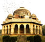</div>
                <div class="pointer_info">
                    <h1>Sayyids</h1>
                    <p> ( 1414 AD - 1451 AD ) </p>
                   <p class="pointer_extra">  Click to exlore history </p>
                </div>
            </li>
            <li>
                <div class="pointer_thumb"></div>
                <div class="pointer_info">
                    <h1>Lodis</h1>
                    <p> ( 1451 AD - 1526 AD ) </p>
                    <p class="pointer_extra"> Click to exlore history </p>
                </div>
            </li>
            <li>
                <div class="pointer_thumb">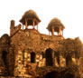</div>
                <div class="pointer_info">
                    <h1>Mughals-1</h1>
                    <p> ( 1526 AD - 1540 AD ) </p>
                   <p class="pointer_extra">  Click to exlore history </p>
                </div>
            </li>
            <li>
                <div class="pointer_thumb">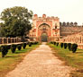</div>
                <div class="pointer_info">
                    <h1>Suris</h1>
                    <p> ( 1540 AD - 1556 AD ) </p>
                  <p class="pointer_extra">  Click to exlore history </p>
                </div>
            </li>
            <li>
                <div class="pointer_thumb"></div>
                <div class="pointer_info">
                    <h1>Mughals-2</h1>
                    <p> ( 1556 AD - 1857 AD ) </p>
                    <p class="pointer_extra">  Click to exlore history </p>
                </div>
            </li>
            <li>
                <div class="pointer_thumb">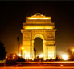</div>
                <div class="pointer_info">
                    <h1>British</h1>
                    <p> ( 1857 AD - 1947 AD ) </p>
                   <p class="pointer_extra">  Click to exlore history </p>
                </div>
            </li>
        </ul>
        <div class="kink"></div>
    </div>
    <div class="timeline_scroll ">
        <div class="timeline_scroll_overlay" style="width:10%"></div>
    </div>
    <div class="time_content">
        <ul class="dynasty_bar">
            <li style="padding-left: 2px;">Rajputs</li>
            <li style="padding-left: 5px;">Delhi Sulatanate</li>
            <li style="padding-left: 3px;">Mughals</li>
            <li style="padding-left: 2px;">British</li>
            <li></li>
        </ul>
        <ul class="timeline_bar">
            <li></li>
            <li></li>
            <li></li>
            <li></li>
            <li></li>
            <li></li>
            <li></li>
            <li></li>
            <li></li>
            <li></li>
            <li style="border-right:1px solid #000"></li>
        </ul>
        <div class="bar_bar"></div>
        <ul class="year_bar">
            <li>700 AD</li>
            <li>800 AD</li>
            <li>900 AD</li>
            <li>1000 AD</li>
            <li>1100 AD</li>
            <li>1200 AD</li>
            <li>1300 AD</li>
            <li>1400 AD</li>
            <li>1500 AD</li>
            <li>1600 AD</li>
            <li>1700 AD</li>
            <li>1800 AD</li>
            <li class="next_last">1900 AD</li>
            <li class="last">2000 AD</li>
        </ul>
    </div>
</section>
<footer class="trans">
    <div class="footer_text">&copy; Tapan Babbar </div>
    <div class="footer_fb">
        <iframe src="http://www.facebook.com/plugins/follow.php?href=http%3A%2F%2Fwww.facebook.com%2Ftapan.babbar&amp;width&amp;height=21&amp;colorscheme=dark&amp;layout=button_count&amp;show_faces=false&amp;appId=248123208669101" scrolling="no" frameborder="0" style="border:none; overflow:hidden; height:21px;" allowTransparency="true"></iframe>
    </div>
    <div class="disclaimer footer_text">Disclaimer</div>
</footer>
<div class="disclaimer_window"><a rel="license" href="http://creativecommons.org/licenses/by-nc/4.0/deed.en_US"></a><br />Except where otherwise noted, content on this site is licensed under <span xmlns:dct="http://purl.org/dc/terms/" href="http://purl.org/dc/dcmitype/StillImage" rel="dct:type"></span>  a <a rel="license" href="http://creativecommons.org/licenses/by-nc/4.0/deed.en_US" target="_blank">Creative Commons Attribution-NonCommercial 4.0 International License</a>.<div class="disclaimer_close">X</div></div>
<div class="lightbox_bg"> </div>
<div class="info_lightbox" > <a>
    <div class="back_timeline">back to timeline <span class="close">X</span></div>
    </a>
    <div class="lightbox_content">

        <!-- TOMARAS -->
        <div class="info_cover">
            <div class="info_cover_pic">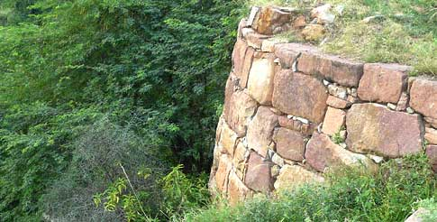</div>
            <div class="info_cover_text">
                <div class="info_cover_captial">CAPITAL CITY IN DELHI</div>
                <div class="info_cover_captial_name">
                    <h1>Lal Kot</h1>
                </div>
                <div class="info_cover_divide"></div>
                <div class="info_cover_captial">rulers</div>
                <div class="info_cover_captial_ruler">
                    <h1>Anangpal Tomar </h1>
                    <h1>Ausan Singh (Tejpal)</h1>
                    <h1> Kosal Dev Singh (Mahipal)</h1>
                    <h1>Anangpal Tomar II</h1>
                </div>
            </div>
        </div>
        <div class="info_history">
            <div class="info_history_para">
                <h2>The Mightiest Cornerstone</h2>
                 <div class="info_cover_divide"></div>
                <p> The more we drill into history, the more we are tempted to trace back the events to the very beginning. However, because of the multifold layers of time and lack of cameras with our forefathers, all we are left with is hypotheses and debates. The origin of Tomaras is one such dispute. The Tomara dynasty claims to be the heirs to the Pandavas - sons of Pandu, and heroes of the epic Mahabharata. If we were to believe the legend, then Delhi was a just a new name given to the ancient kingdom of Indraprastha, and Tomaras began to rule in succession to the Pandavas.
<br /><br />
To add to our confusion, there are other Hindu texts, which accredits the term ‘Delhi’ to myriads of other origins. For one, Delhi could either be traced back to the word 'Dhillika', or if we were to pick from Satyarth Prakash (1874) by Swami Dayanand, it was Raja Dhilu who founded ancient Delhi in 800 BC, and the term Dilli was derived from the king’s name. But sadly it isn’t supported by any older texts.
<br /><br />
Going simply by archeology and making life easy for us, let's go by the premise that, the foundation of Delhi was laid by Anangpal Tomar in 736, as the capital of many villages in and around the Delhi, Haryana region. Stronghold of Tomaras, ‘Lal Kot’ - a fortified city in Mehrauli region was built by Anangpal Tomar II, to halt the raids by Mahmud of Ghazni. After the demise of Anangpal Tomar II, Prithviraj Chauhan, his maternal grandson and the then king of Ajmer, took control of Lal Kot. Whether Prithviraj Chauhan was a crowned heir, or he forcefully took the throne is still a debate.
 </p>
            </div>
        </div>

        <!-- chauhans -->

        <div class="info_cover">
            <div class="info_cover_pic">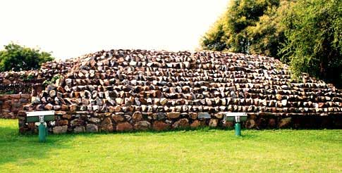</div>
            <div class="info_cover_text">
                <div class="info_cover_captial">CAPITAL CITY IN DELHI</div>
                <div class="info_cover_captial_name">
                    <h1>Qila Rai Pithora</h1>
                </div>
                <div class="info_cover_divide"></div>
                <div class="info_cover_captial">rulers</div>
                <div class="info_cover_captial_ruler">
                    <h1>Prithviraj Chauhan <span class="ruler_date">(1180 – 1192)</span></h1>
                </div>
            </div>
        </div>
        <div class="info_history">
            <div class="info_history_para">
                <h2>Chivalry, Mercy, Doom!! </h2>
                 <div class="info_cover_divide"></div>
                <p> Now this would sound familiar to many. The Rajput King Prithviraj III, popularly known as Prithviraj Chauhan, was the last Hindu King (before Hemu) to ascend upon the throne of Delhi. The Rajputs, popular in history for their pride and honor, were also great warriors. However, we would soon see that it was their internal disputes, which had kept the throne of Hindustan, always vulnerable to foreign invasions. Prithviraj Chauhan was a bit smarter than his peers. He unified the Rajput forces under one banner, and against the Muslim invasions. He received the throne of Delhi from his maternal grandfather Anangpal Tomar II in 1180.<br /><br />

Prithviraj renamed Lal Kot as ‘Rai Pithora’ and ruled most of the North West India including the states of Rajasthan, Haryana, parts of Uttar Pradesh, and Punjab. He defeated Muhammad Ghori, in the first battle of Tahrain. Dismissing the warnings of caution by his ministers, the chivalrous King pardoned and released Ghori. He was soon to regret it. Muhammad Ghori regrouped his forces and defeated Prithviraj at the second Battle of Tahrain in 1192 commencing the Muslim rule in India. <br /><br />

Prithviraj Chauhan was captured, blinded, and taken to Afghanistan. Although there isn’t any historical proof, many believe that Prithviraj killed Ghori by a ‘shabda-bhedi’ arrow- (i.e. firing solely guided by the sound of the target) and later stabbed himself. Fantasy readers would love to believe this version. Fan boys of Muhammad Ghori still vent out their anger by stabbing on the grave of Prithviraj Chauhan in Afghanistan.
 </p>
            </div>
        </div>

        <!-- mamluk -->
        <div class="info_cover">
            <div class="info_cover_pic">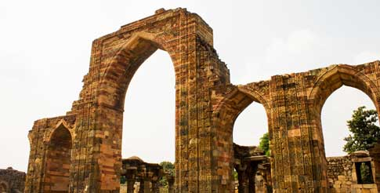</div>
            <div class="info_cover_text">
                <div class="info_cover_captial">CAPITAL CITY IN DELHI</div>
                <div class="info_cover_captial_name">
                    <h1>Mehrauli</h1>
                </div>
                <div class="info_cover_divide"></div>
                <div class="info_cover_captial">rulers</div>
                <div class="info_cover_captial_ruler">
                    <h1> Qutb-ud-din Aibak <span class="ruler_date">(1206 - 1210)</span></h1>
                    <h1>Aram Shah <span class="ruler_date">(1210 - 1211)</span></h1>
                    <h1>Shams-ud-din Iltutmish<span class="ruler_date">(1211 - 1236)</span></h1>
                    <h1>Rukn-ud-din Feroze<span class="ruler_date">(1236)</span></h1>
                    <h1>Razia al-Din<span class="ruler_date">(1236 - 1240)</span></h1>
                    <h1>Muiz-ud-din Bahram<span class="ruler_date">(1240 - 1242)</span></h1>
                    <h1>Nasir-ud-din Mahmud<span class="ruler_date">(1246 - 1266)</span></h1>
                    <h1>Ghiyath-ud-din Balban<span class="ruler_date">(1266 - 1287)</span></h1>
                    <h1> Muiz-ud-din Muhammad Qaiqabad<span class="ruler_date">(1287 - 1290)</span></h1>
                </div>
            </div>
        </div>
        <div class="info_history">
            <div class="info_history_para">
                <h2>Slaves to Sultans</h2>
                 <div class="info_cover_divide"></div>
                <p> Year 1192 - Muhammad Ghori had defeated Prithviraj Chauhan and merrily returned back to Afghanistan. He appointed Qutb-ud-din Aibak, a Turkic slave, who later rose through ranks to become a general in Ghori’s army, as his Governor of Delhi.<br /><br />

Muhammad Ghori had no sons. After he was assassinated in 1206, his dominions were divided among his slaves. Qutb-ud-din Aibak became the sultan of Delhi. A lover of art and literature, he started the construction of the Qutub Minar. But due to a fatal accident while playing polo, he couldn't witness its completion.<br /><br />

Aibak’s successor, Iltutmish decided to fulfill his father’s wish and carried out the remaining construction of Qutub Minar. Genghis khan was on the rise during the same time. But Iltutmish was able to establish a cordial diplomatic contact with the Abbasid Caliphate between 1228–29 and had managed to keep India unaffected by the invasions of Genghis Khan and his successors.<br /><br />

After Iltutmish died in 1236, Delhi was at the mercy of a series of weak rulers. Many noblemen declared rebellion, and assumed leadership of their respective provinces. Such was the state until Ghiyas-ud-din Balban came to power, and successfully thwarted external and internal threats to the Sultanate. Balban died at the age of eighty, pretty impressive for those times. However, due to the lack of a suitable heir, the throne eventually passed to three year old Kayumaras. Apparently, it was too much pressure for the young lad, as his guardian, Jalal-ud-din Khilji, ultimately dethroned Kayumaras in 1290. This marked the end of the Mamluk dynasty in Delhi's history.

 </p>
            </div>
        </div>

        <!-- khilji -->

        <div class="info_cover">
            <div class="info_cover_pic">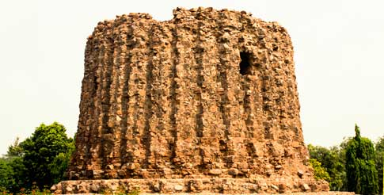</div>
            <div class="info_cover_text">
                <div class="info_cover_captial">CAPITAL CITY IN DELHI</div>
                <div class="info_cover_captial_name">
                    <h1>siri</h1>
                </div>
                <div class="info_cover_divide"></div>
                <div class="info_cover_captial">rulers</div>
                <div class="info_cover_captial_ruler">
                    <h1>Jalal-ud-din<span class="ruler_date">(1290 – 1296)</span></h1>
                    <h1>Ala-ud-din<span class="ruler_date">(1296–1316)</span></h1>
                    <h1>Shihab-ud-din<span class="ruler_date">(1316)</span></h1>
                    <h1>Qutb-ud-din<span class="ruler_date">(1316 – 1320)</span></h1>
                </div>
            </div>
        </div>
        <div class="info_history">
            <div class="info_history_para">
                <h2>Bastions of the<br />
 second Alexander</h2>
                 <div class="info_cover_divide"></div>
                <p>
Ala-ud-din Khilji usurped the throne of Delhi from his Uncle Jalal-ud-din Khilji. Considered, the most powerful ruler in the history of Delhi Sultanate, he expanded his province beyond Gujarat, Ranthambore, Mewar, Malwa, Jalore, Warangal, Mabar and Madurai. He took the title of ‘Sikander-i-Sani’ - ‘The Second Alexander. Besides being a famous warmonger, successfully defending Delhi against many Mongol invasions, he was also an able ruler. The nobles were under constant scrutiny, as even their private households were not spared from an efficient network of spies.  His free market policy reduced the prices of all essential items needed in daily life.<br /><br />

Ala-ud-din built the first building in the history of India that employed Islamic architecture. This domed gateway was named the Alai - Darwaza and can still be seen near Quwwat-ul-Islam Mosque in the Qutub Complex. The city of Siri built to defend the Delhi sultanate against the Mongols, is also accredited to his name by history. He also desired to build a tower twice the height of the Qutub Minar. Now that would have satisfied the pride of the Second Alexander.  However, due to the emperor’s death, the construction was stopped midway.  <br /><br />

Ala-ud-din's death was followed by a war of succession amongst his sons. Qutb-ud-din Mubarak Shah Khilji, son of Ala-ud-din and the last Khilji ruler, was murdered by Khusro Khan. Khusro Khan, a Hindu slave captured the throne of Delhi but couldn't hold it for long. Just after four months, he was defeated and killed by Ghiyath al-Din Tughluq, who founded the Tughlaq dynasty in Delhi.

 </p>
            </div>
        </div>

        <!-- Tughlaq -->
        <div class="info_cover">
            <div class="info_cover_pic">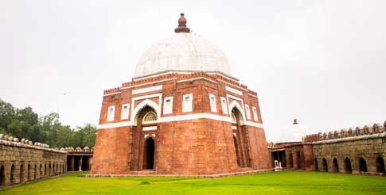</div>
            <div class="info_cover_text">
                <div class="info_cover_captial">capital cities in Delhi</div>
                <div class="info_cover_captial_name">
                    <h1>Tughluqabad , Jahanpanah , Ferozabad</h1>
                </div>
                <div class="info_cover_divide"></div>
                <div class="info_cover_captial">rulers</div>
                <div class="info_cover_captial_ruler">
                    <h1>Ghiyath-ud-din<span class="ruler_date">(1321 – 1325)</span></h1>
                    <h1>Muhammad Adil bin <span class="ruler_date">(1325 – 1351)</span></h1>
                    <h1>Feroze Shah<span class="ruler_date">(1351 – 1388)</span></h1>
                    <h1> Ghiyath-ud-din <span class="ruler_date">(1388 – 1389)</span></h1>
                    <h1>Abu Bakr Shah<span class="ruler_date">( 1389 – 1390)</span></h1>
                    <h1>Muhammad Shah <span class="ruler_date">(1390 – 1394)</span></h1>
                    <h1> Ala-ud-din Sikandar Shah <span class="ruler_date">(1394)</span></h1>
                    <h1>Nasir-ud-din Mahmud Shah <span class="ruler_date">(1394 – 1413)</span></h1>
                    <h1>Nasir-ud-din Nusrat Shah <span class="ruler_date">(1394 – 1398)</span></h1>
                </div>
            </div>
        </div>
        <div class="info_history">
            <div class="info_history_para">
                <h2>How to lose it ALL!</h2>
                 <div class="info_cover_divide"></div>
                <p>Ghiyath al-Din Tughluq was the founder of the fifth city of Delhi called Tughlaqabad. He was an able military commander. He removed corrupt officials from his administration, reformed the judiciary and all existing police departments. His death however is a mystery. According to the famous Moroccan explorer in history , Ibn Battuta , who was seeking employment at the Tughlaq court, the murder of Ghiyath al-Din Tughluq was conspired by his son, Jauna Khan. Jauna Khan on succession of Delhi, took the title of Muhammad bin Tughlaq.
<br /><br />
When Muhammad bin Tughlaq was crowned emperor, his empire included almost the whole of the northern India, with the exception of Kashmir, Cutch and a part of Kathiawar and Orissa. However, the empire started to disintegrate henceforth due to a number of reasons. The shifting of capital from Delhi to Daulatabad back and forth caused a lot of mismanagement and downright chaos. In an attempt to invite some more trouble, the Tughlaqs later introduced copper coins, instead of silver. Since copper coins could be easily forged, the treasuries became clumsy. Feroze Shah Tughlaq, cousin of Muhammad bin Tughlaq upon succession after the latter’s death, tried to restore order within the kingdom. History suggests that he was a great reformer, but lacked martial skills because of which he could never reclaim kingdoms, which were once under the Delhi sultanate. Revival of jagir system and rebellion from Hindus due to forced conversion into Islam added to the misery.
<br /><br />
The Tughlaq dynasty received its final blow, when Timur invaded India in 1398. For eight days Delhi was plundered, enough to destroy what little was left of the Tughlaq foundations. It is believed that Delhi didn’t have a ruler for four months, causing a massive breakdown.

 </p>
            </div>
        </div>

        <!-- sayiadd -->

        <div class="info_cover">
            <div class="info_cover_pic">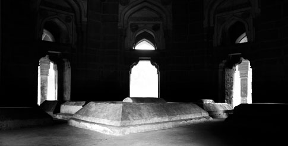</div>
            <div class="info_cover_text">
                <div class="info_cover_captial">rulers</div>
                <div class="info_cover_captial_ruler">
                    <h1>Khizr Khan <span class="ruler_date">(1414 – 1421)</span></h1>
                    <h1>Mubarak Shah <span class="ruler_date">(1421 – 1434)</span></h1>
                    <h1>Muhammad Shah <span class="ruler_date">(1434 – 1445)</span></h1>
                    <h1>Ala-un-din Alam Shah <span class="ruler_date">(1445 – 1451)</span></h1>
                </div>
            </div>
        </div>
        <div class="info_history">
            <div class="info_history_para">
                <h2>Birds of the changing wind</h2>
                 <div class="info_cover_divide"></div>
                <p>
To know more about Sayyids, we would need to go back in history a few years. Khizr Khan ibn Malik Sulaiman was appointed as the governor of Multan by Feroze Shah Tughlaq. Later he was dislodged from his position in 1395. Khizr Khan fled to Mewat, and subsequently joined the forces of Timur. Just a few years later in 1398, Timur invaded India, and sacked Delhi after defeating Nasir-ud-din Mahmud Shah Tughlaq.<br /><br />

Khizr Khan founded the Sayyid dynasty in 1414, but never took the title of Sultan and ruled as a vassal of Timur. The coins were struck in the names of Amir Timur and later in the name of his heir Shah Rukh. After his death on May 20, 1421 Khizr Khan was succeeded by his son Mubarak Khan. Mubarak khan wasn’t as humble as his father and styled himself as Muizz-ud-Din Mubarak Shah in his coins.<br /><br />

After the death of Mubarak Khan, his nephew Muhammad Khan ascended the throne of Delhi and assumed the title of Sultan Muhammad Shah. Just before death verged upon him, he summoned his son Ala-ud-Din Alam Shah from Badaun to Delhi and declared him as his heir. Maybe Ala-ud-Din started feeling homesick, but what we know for sure is that he voluntarily resigned the throne of the Delhi sultanate in favor of Bahlol Khan Lodi on April 19, 1451 and left for Badaun. He continued to live there till his death in 1478.
<br /><br />
Delhi was now Lodis’.
 </p>
            </div>
        </div>

        <!-- lodi -->
        <div class="info_cover">
            <div class="info_cover_pic">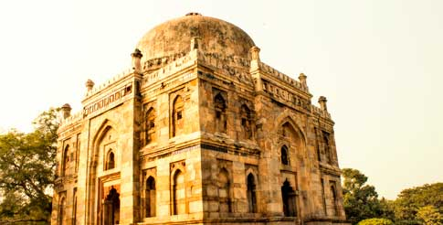</div>
            <div class="info_cover_text">
                <div class="info_cover_captial">rulers</div>
                <div class="info_cover_captial_ruler">
                    <h1>Bahlul Lodi <span class="ruler_date">(1451 – 1489)</span></h1>
                    <h1>Sikandar Lodi <span class="ruler_date">(1489 – 1517)</span></h1>
                    <h1>Ibrahim Lodi <span class="ruler_date">(1489 – 1526)</span></h1>
                </div>
            </div>
        </div>
        <div class="info_history">
            <div class="info_history_para">
                <h2>The Generous Gift</h2>
                 <div class="info_cover_divide"></div>
                <p>
Ala-ud-Din Alam Shah, the last Sayyid ruler renounced the throne of Delhi in favor of Bahlol Lodi, the founder of the Lodi dynasty. Bahlol spent most of his time in fighting against the Sharqi dynasty and ultimately annexed it. Sikandar Lodi, the second son of Bahlol was crowned emperor of Delhi after his father’s death. History credits him for his contribution in literature, trade and commerce. He ordered translation of works in medicine from Sanskrit to Persian.<br /><br />

Ibrahim Lodi, youngest son of Sikandar, faced a lot of incursion from Rana Sanga of Mewar, shaking his stronghold in Delhi. However it was Babur, king of Kabul, and native of Ferghana, who dislodged the Lodi dynasty after defeating Ibrahim in the historic first battle of Panipat in 1526.<br /><br />

Daulat khan Lodi, governor of Lahore during Ibrahim’s reign, had switched sides and offered his support to Babur. History suggests, that Daulat Khan had sensed the fact that Ibrahim plans to remove his governorship. Though Babur had a lesser army than that of the Lodis’, the cannon brought by him, balanced out the deficit in numbers. It was the first time that cannon was used in India. Unprepared for such a kind of onslaught, Lodis were defeated, and Ibrahim Lodi was killed. Thus, Babur established the Mughal rule in Delhi.

</p>
            </div>
        </div>

        <!-- mughal-1 -->

        <div class="info_cover">
            <div class="info_cover_pic">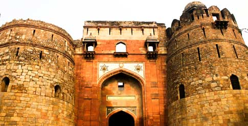</div>
            <div class="info_cover_text">
                <div class="info_cover_captial">city</div>
                <div class="info_cover_captial_name">
                    <h1>Dinpanah</h1>
                </div>
                <div class="info_cover_divide"></div>
                <div class="info_cover_captial">rulers</div>
                <div class="info_cover_captial_ruler">
                    <h1>Babur<span class="ruler_date">(1526 - 1530)</span></h1>
                    <h1>Humayun<span class="ruler_date">(1530 – 1540)</span></h1>
                </div>
            </div>
        </div>
        <div class="info_history">
            <div class="info_history_para">
                <h2>Lords of the world</h2>
                 <div class="info_cover_divide"></div>
                <p> Babur, a timurid prince, always envisaged Hindustan as his rightful heirloom because his forefather Timur had annexed it. During his days in Kabul, he had a strong yearning to rule Hindustan. So when, Daulat khan Lodi invited him to challenge the Lodi dynasty, he couldn't resist. With an army low in numbers, but high on artillery, Babur crossed the Indus, and defeated Ibrahim Lodi in the first battle of Panipat in April 1526.<br /><br />

Babur’s reign was short lived due to his illness. He died at an early age of 47 and was succeeded by Humayun. From the very beginning of his reign, Humayun faced threats from the inside as well as outside. His half brothers, Kamran and Aksari had joined forces against him. To make matters worse, Sher Shah had started a rebellion in Bengal.<br /><br />

It is suggested by history that, Humayun got obsessed with astrology and star gazing, hence ignoring the rebellions. Due to his opium addictions, his credibility as an able ruler had gone down among the members of his court. He was defeated by Sher Shah Suri, first at Chausa in 1539 and later at Kanauj in 1540, and was forced on an exile for years to come.


 </p>
            </div>
        </div>

        <!-- suri -->

        <div class="info_cover">
            <div class="info_cover_pic">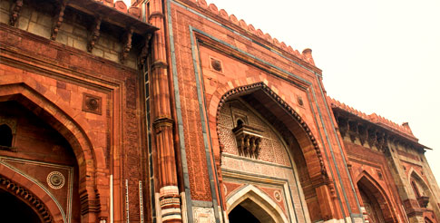</div>
            <div class="info_cover_text">
                <div class="info_cover_captial">CAPITAL CITY IN DELHI</div>
                <div class="info_cover_captial_name">
                    <h1>Sher-Garh</h1>
                </div>
                <div class="info_cover_divide"></div>
                <div class="info_cover_captial">rulers</div>
                <div class="info_cover_captial_ruler">
                    <h1>Sher Shah<span class="ruler_date">(1540 – 1545)</span></h1>
                    <h1>Islam Shah<span class="ruler_date">(1545 - 1554)</span></h1>
                    <h1>Firuz Shah<span class="ruler_date">(1554)</span></h1>
                    <h1>Muhammad Adil Shah<span class="ruler_date">(1554 - 1555)</span></h1>
                    <h1>Ibrahim Shah<span class="ruler_date">(1555)</span></h1>
                    <h1>Sikandar Shah<span class="ruler_date">(1555)</span></h1>
                    <h1>Adil Shah<span class="ruler_date">(1555 - 1556)</span></h1>
                </div>
            </div>
        </div>
        <div class="info_history">
            <div class="info_history_para">
                <h2>The Lion King </h2>
                 <div class="info_cover_divide"></div>
                <p> Sher Shah was born as Farid Khan, one of about eight sons of Mian Hassan Khan Sur, a prominent figure in the government of Bahlol Khan Lodi. When power shifted hands from Lodis to Mughals, Sher Shah rose through ranks from a soldier to a commander, and later became the governor of Bihar.<br /><br />

During the reign of Humayun, he launched an open rebellion against the Mughals and established the Sur dynasty in Bengal. Humayun, overconfident with the superiority of his numbers and the signs of good omen, made a few tactical mistakes causing his defeat at the battle of Kanauj and later at Chausa. Sher Shah ascended the throne of Delhi and forced Humayun to exile.
<br /><br />
Sher Shah was a brilliant administrator. He laid firm foundations, which were followed, long after his time. In a brief span of 5 years (1540-1545), he made drastic reforms in civil and military administration. The currency of Rupiya was first issued in those times. The Grand Trunk Road was built from Chittagong in Bangladesh to Kabul in Afghanistan, improving the transportation and postal services. The city of Dina-Panah was further developed and was renamed as Sher-Garh. The kingdom was prosperous, and Sher Shah ruled with sheer confidence, without the slightest awareness of what fate had in store.<br /><br />

Tragedy struck the Suris when an explosion of gunpowder took the king’s life in 1545. Islam Shah, his son succeeded him, but he too died in a short span in 1554. A series of weak rulers followed Islam Shah, thus creating an opportunity for the Mughals to return. Humayun who had regrouped a vast army in Kabul, under the leadership of Bairam Khan, took back his throne.
 </p>
            </div>
        </div>

        <!-- mughal-2 -->

        <div class="info_cover">
            <div class="info_cover_pic mughal_cover_pic">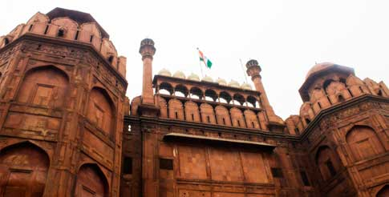</div>
            <div class="info_cover_text">
                <div class="info_cover_captial">city</div>
                <div class="info_cover_captial_name">
                    <h1>Shahjahanabad (1638)</h1>
                </div>
                <div class="info_cover_divide"></div>
                <div class="info_cover_captial">rulers</div>
                <div class="info_cover_captial_ruler">
                    <h1>Humayun <span class="ruler_date">(1555 - 1556)</span></h1>
                    <h1>Akbar <span class="ruler_date">(1556 - 1605)</span></h1>
                    <h1>Jahangir <span class="ruler_date">(1605 – 1627)</span></h1>
                    <h1>Shah-Jahan<span class="ruler_date">(1627 – 1658)</span></h1>
                    <h1 >Aurangzeb<span class="ruler_date">(1658 – 1707)</span></h1>
                    <h1 class="extra_mughal extra_mughal_first">Azam Shah<span class="ruler_date">(1707)</span></h1>
                    <h1 class="extra_mughal">Bahadur Shah<span class="ruler_date">(1707 – 1712)</span></h1>
                    <h1 class="extra_mughal">Jahandar Shah<span class="ruler_date">(1712 – 1713)</span></h1>
                    <h1 class="extra_mughal">Farrukhsiyar<span class="ruler_date">(1713 – 1719)</span></h1>
                    <h1 class="extra_mughal">Rafi ud-Darajat<span class="ruler_date">(1719)</span></h1>
                    <h1 class="extra_mughal">Shah Jahan II<span class="ruler_date">(1719)</span></h1>
                    <h1 class="extra_mughal">Muhammad Shah<span class="ruler_date">(1719 - 1748)</span></h1>
                    <h1 class="extra_mughal">Ahmad Shah Bahadur<span class="ruler_date">(1748 - 1754)</span></h1>
                    <h1 class="extra_mughal">Alamgir II<span class="ruler_date">(1754 - 1759)</span></h1>
                    <h1 class="extra_mughal">Shah Jahan III<span class="ruler_date">(1759 - 1760)</span></h1>
                    <h1 class="extra_mughal">Shah Alam II<span class="ruler_date">(1759 - 1806)</span></h1>
                     <h1 class="extra_mughal">Akbar Shah II<span class="ruler_date">(1806 - 1837)</span></h1>
                      <h1 class="extra_mughal">Bahadur Shah II<span class="ruler_date">(1837 - 1857)</span></h1>
                    <h1 class="mughal_more">There were more...</h1>
                </div>
            </div>
        </div>
        <div class="info_history">
            <div class="info_history_para">
                <h2>Return of the<br />
 Green banner</h2>
                 <div class="info_cover_divide"></div>
                <p>
After a brief pause caused by the Suris, Mughals were back on the throne of Delhi. But very soon after Humayun got used to the air of Hindustan, the days turned sour, taking the emperor’s life. History proposes that he had fallen from the stairs of Sher Mandal, his astronomical library, while some believe he was pushed. The future of the Mughal dynasty was jeopardized once again when 13-year-old Akbar was proclaimed Emperor.
<br /><br />
But under the guidance of Bairam Khan, Jalal ud-din Muhammad Akbar grew up to become one of the most able rulers in history of India. He brought Rajputana under his control either by force, or by strategic alliances. Bengal in the east and Gujarat in the west were subjugated by the Mughals. Akbar’s administration was unparalled. Reforms in the taxation and judiciary are few of the many changes made by Akbar to achieve a stable empire.
<br /><br />
The heirs to the Mughal throne, Jahangir and Shah-Jahan further expanded the kingdom in the south. Throughout the course of history , the threats faced by the Mughal dynasty were mainly because of the internal rivalries between father and son, and between brothers and half-brothers. Shah Jahan built the city of Shahjahanabad in 1639 , and the famous jewel in Indian history, Taj Mahal. Aurangzeb, son of Shah Jahan, was constantly at war. By 1689, almost all of Southern India was a part of the Mughal Empire. But soon, Marathas and Sikhs began their rebellion in south and north respectively.
<br /><br />
After the death of Aurangzeb, revolts had increased, and the Mughal empire started to disintegrate. Following the invasion by Nadir Shah in 1739, the foundations of Mughal dynasty were fatally weakened. Further the colonial monopoly of the East India Company brought down the Mughals to mere namesake rulers. The last Mughal emperor Bahadur Shah was unfrocked by the British after the revolt of 1857, and was exiled to Burma. Queen Victoria in 1876 was proclaimed the empress of India.
<br /><br />
British Raj had begun.


 </p>
            </div>
        </div>

        <!-- british  -->
        <div class="info_cover">
            <div class="info_cover_pic"></div>
            <div class="info_cover_text">
                <div class="info_cover_captial">CAPITAL CITY IN DELHI</div>
                <div class="info_cover_captial_name">
                    <h1>Lutyen's Delhi</h1>
                </div>
                <div class="info_cover_divide"></div>
                <div class="info_cover_captial">rulers</div>
                <div class="info_cover_captial_ruler">
                    <h1>The british Crown <span class="ruler_date">(1857 – 1947)</span></h1>
                </div>
            </div>
        </div>
        <div class="info_history">
            <div class="info_history_para">
                <h2>To kill a <br />
Golden Bird</h2>
                 <div class="info_cover_divide"></div>
                <p> The establishment of the British rule goes way back in the 1600s. Originally chartered as the East India Company (EIC), they were associated with trade in basic commodities, which included cotton, salt, silk, indigo dye, tea and opium. The company slowly started exercising military power through their privately owned armies and began assuming administrative control. The colonial dominance and the effective rule of the EIC began in 1757 after the battle of Plassey, wherein the EIC defeated the Nawab of Bengal and his French allies. Bengal was annexed by EIC.
<br /><br />
The system of governance was instituted in 1858, after the Indian Revolt of 1857. The rule of the British East India Company was transferred to the Crown in the person of Queen Victoria (and who, in 1876, was proclaimed Empress of India).<br /><br />

In 1911 George V announced that the capital of British India was to be transferred from Calcutta to Delhi. Edwin Lutyens (1869–1944) was responsible for much of the architectural design and buildings in New Delhi, India. This includes the Rashtrapati Bhavan, formerly known as Viceroy's House, Sansad Bhavan, Connaught Place and Lutyens Bungalow zone. New Delhi was officially declared as the capital of the Union of India after the nation gained independence on 15 August 1947.


 </p>
            </div>
        </div>
        <a>
        <div class="back_timeline">back to timeline <span class="close">X</span></div>
        </a> </div>
</div>
<script>
<!-- jPreLoader script -->
$(document).ready(function() {


	window.scrollTo(0, 0);
	$(".timeline").css({"height":0});

	var timer;
	 //PointerEventsPolyfill.initialize({});
	//calling jPreLoader function with properties
	$('body').jpreLoader({
		splashID: "#jSplash",
		splashFunction: function() {  //passing Splash Screen script to jPreLoader
			$('#jSplash').children('section').not('.selected').hide();
			$('#jSplash').hide().fadeIn(0);

			timer = setInterval(function() {
				//splashRotator();
			}, 3000);
		}
	}, function() {	//jPreLoader callback function
		clearInterval(timer);
		$('footer').animate({"bottom":0}, 500);
		$('header').animate({"top":0}, 800, function() {
			$('#wrapper').fadeIn(1000);
		});
	});
});
<!-- End of jPreLoader script -->


</script>

<script>
  (function(i,s,o,g,r,a,m){i['GoogleAnalyticsObject']=r;i[r]=i[r]||function(){
  (i[r].q=i[r].q||[]).push(arguments)},i[r].l=1*new Date();a=s.createElement(o),
  m=s.getElementsByTagName(o)[0];a.async=1;a.src=g;m.parentNode.insertBefore(a,m)
  })(window,document,'script','../www.google-analytics.com/analytics.js','ga');

  ga('create', 'UA-48154171-1', 'delhi-timeline.in');
  ga('send', 'pageview');

</script>

</body>

<!-- Mirrored from delhi-timeline.in/ by HTTrack Website Copier/3.x [XR&CO'2014], Thu, 09 Jul 2015 04:39:57 GMT -->
</html>
